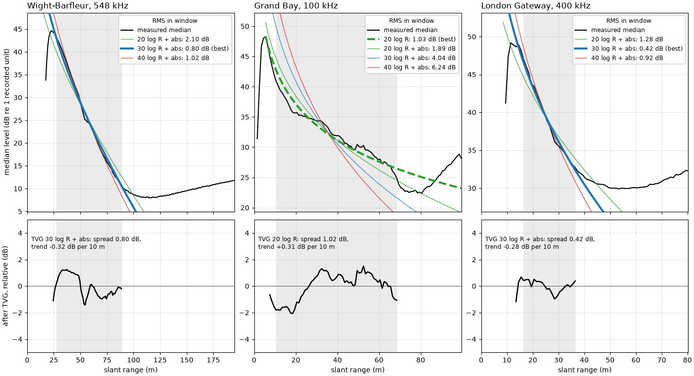
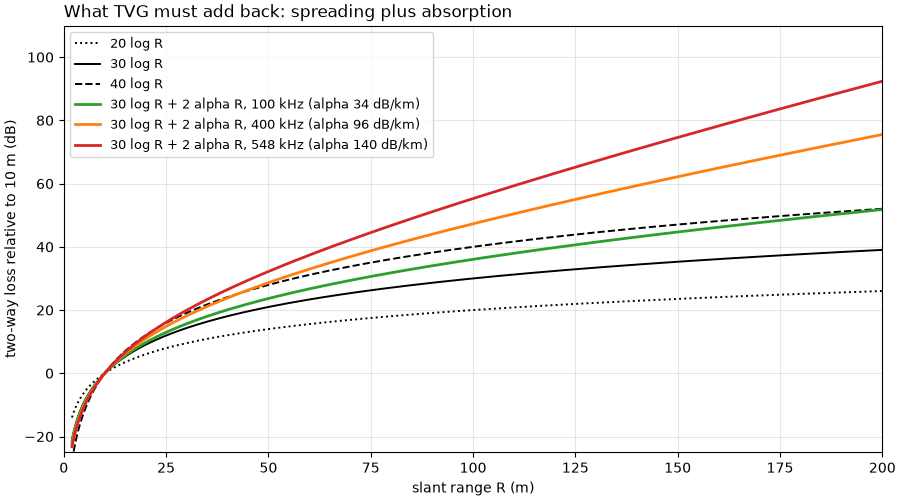
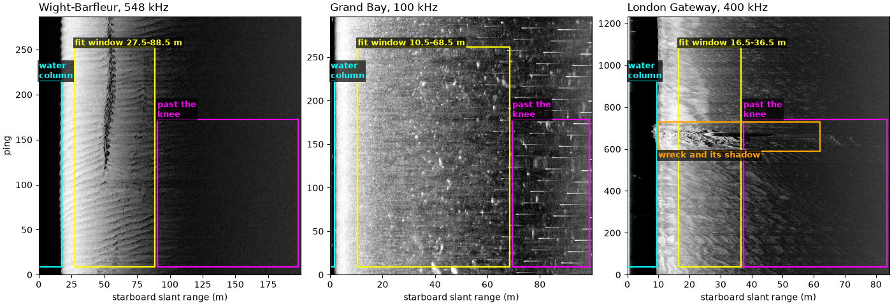
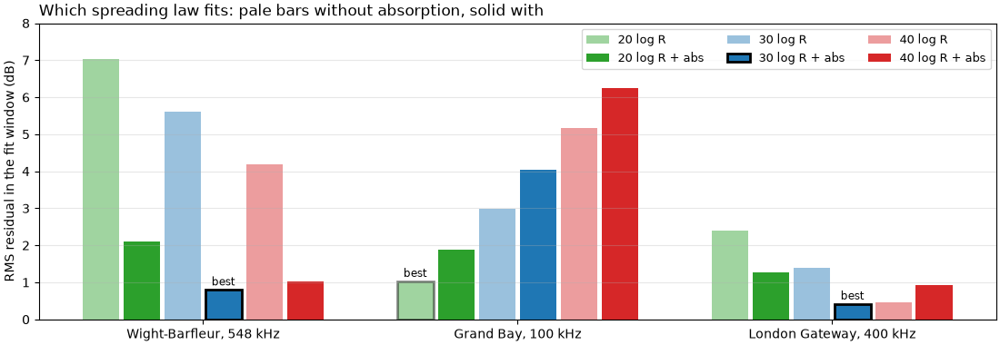
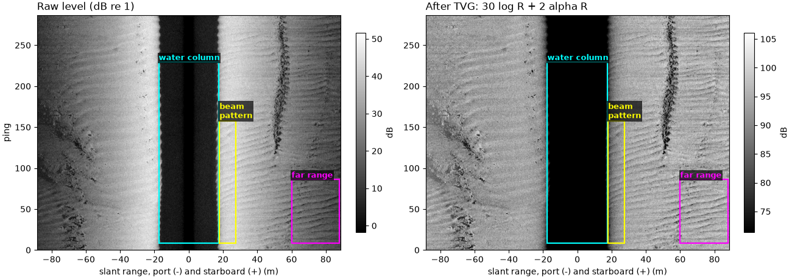

Note
Go to the end to download the full example code.
The sonar equation and time-varying gain#

The sonar equation keeps the books on an echo in decibels. The echo
level EL the receiver sees is the source level SL the
transducer sends, less the transmission loss TL on the way out and
again on the way back, plus the backscatter strength BS of whatever
returned the sound:
One way, the sound spreads over a sphere and seawater absorbs part of
it, alpha dB per meter:
so the echo of a single small target falls as 40 log10 R + 2 alpha R
with slant range R.
The seabed is not a single target. Its backscatter strength is a
strength per square meter, S_b, times the patch of seabed the pulse
lights at one time, A:
Along track the patch is as wide as the beam, R theta for a beam of
horizontal width theta; across track it is set by the pulse and, at
the low grazing angles of sidescan, hardly changes with range. So A
grows in proportion to R, which wins back 10 log10 R, and the
seabed echo falls about
(Tamsett, 2017, doi:10.3390/jmse5040054). Fisheries echosounders, which
measure fish spread through a volume, use 20 log10 R for the same
reason: the lit volume grows as R^2.
The levels in a sidescan file are relative (Echo amplitude and decibels),
so SL, the receiver gain and the absolute S_b are one unknown
constant. Only how the level changes with range matters. Time-varying
gain (TVG) adds back the modelled loss, n log10 R + 2 alpha R, so a
uniform seabed comes out at the same level at all ranges. Many recorders
apply some TVG in hardware and do not record which, so the right model
is fitted to each recording rather than assumed. Absorption is computed
with Francois and Garrison (1982), J. Acoust. Soc. Am. 72(3) 896-907 and
72(6) 1879-1890.
TVG corrects the loss along the path only. What it leaves behind is the
transducer’s beam pattern and the way the seabed scatters less at low
grazing angles (Lambert’s law: S_b falls with the square of the
sine of the grazing angle). sidescanpy’s empirical range correction
flattens those.
Data: JNCC Wight-Barfleur Reef, EdgeTech JSF (Open Government Licence v3.0); USGS Grand Bay, Klein XTF (public domain); BGS London Gateway, Klein 3000 XTF (Open Government Licence v3.0, contains data supplied by UKRI) (see Example data).
Usage: python examples/theory/plot_sonar_equation_and_tvg.py [output_dir]
# 2026 rshomberg@uri.edu
import sys
from pathlib import Path
import matplotlib.pyplot as plt
import numpy as np
from matplotlib.patches import Rectangle
from sidescanpy import analysis, datasets
from sidescanpy.io import read_and_convert
from sidescanpy.log import configure_logging
from sidescanpy.processing import (
altitude_from_bottom_track,
apply_tvg,
compute_geometric_ranges,
slice_by_range,
)
from sidescanpy.processing.radiometric import (
center_frequency_hz,
francois_garrison_absorption_db_per_m,
)
from sidescanpy.viz.tvg import plot_tvg_fit
out = Path(sys.argv[1]) if len(sys.argv) > 1 else Path(".")
out.mkdir(parents=True, exist_ok=True)
configure_logging("ERROR")
Spreading laws and absorption#
Two-way loss relative to its value at 10 m, for the three spreading
laws alone and for 30 log R with absorption at three frequencies
(Francois-Garrison, default water: 10 C, salinity 35, 10 m depth, pH 8).
The curves differ most at short range, where log10 R changes
fastest; absorption takes over at long range and high frequency.
R = np.linspace(2, 200, 400)
R_REF = 10.0
fig, ax = plt.subplots(figsize=(9, 5), constrained_layout=True)
for n, ls in ((20, ":"), (30, "-"), (40, "--")):
ax.plot(R, n * np.log10(R / R_REF), color="k", ls=ls, lw=1.4, label=f"{n} log R")
for f_khz, colour in ((100, "C2"), (400, "C1"), (548, "C3")):
a = francois_garrison_absorption_db_per_m(f_khz * 1e3)
ax.plot(R, 30 * np.log10(R / R_REF) + 2 * a * (R - R_REF), color=colour, lw=2,
label=f"30 log R + 2 alpha R, {f_khz} kHz (alpha {1000 * a:.0f} dB/km)")
print(f"{f_khz} kHz: alpha = {a:.4f} dB/m; two-way absorption from 10 to 100 m: 2 x {a:.4f} x 90 = "
f"{2 * a * 90:.1f} dB")
print(f"spreading from 10 to 100 m: 20 log R {20:.0f} dB, 30 log R {30:.0f} dB, 40 log R {40:.0f} dB")
ax.set_xlim(0, 200)
ax.set_ylim(-25, 110)
ax.set_xlabel("slant range R (m)")
ax.set_ylabel("two-way loss relative to 10 m (dB)")
ax.set_title("What TVG must add back: spreading plus absorption", loc="left")
ax.grid(alpha=0.3)
ax.legend(loc="upper left", fontsize=9)
fig.savefig(out / "sonar_equation_and_tvg_laws.png", dpi=150)

100 kHz: alpha = 0.0336 dB/m; two-way absorption from 10 to 100 m: 2 x 0.0336 x 90 = 6.0 dB
400 kHz: alpha = 0.0960 dB/m; two-way absorption from 10 to 100 m: 2 x 0.0960 x 90 = 17.3 dB
548 kHz: alpha = 0.1404 dB/m; two-way absorption from 10 to 100 m: 2 x 0.1404 x 90 = 25.3 dB
spreading from 10 to 100 m: 20 log R 20 dB, 30 log R 30 dB, 40 log R 40 dB
Three recordings#
The high frequency of the Wight-Barfleur line (a chirp from 521 to
574 kHz, center 548 kHz, sidescanpy key hz_521000, named by the
start of the sweep; labels use the center. The JSF records no
altitude, so it comes from the first seabed echo), a Klein line from the shallow Grand Bay
estuary (100 kHz) and a London Gateway line (Klein 3000, 400 kHz) whose
recorder applied its own TVG. Incomplete pings are dropped.
RECORDINGS = {
"Wight-Barfleur, 548 kHz": ("jncc_wight_barfleur_20130321174522.jsf", {"fmt": "jsf"}, "hz_521000"),
"Grand Bay, 100 kHz": ("usgs_grand_bay_150602205800.xtf", {"fmt": "xtf"}, "hz_100000"),
"London Gateway, 400 kHz": ("bgs_london_gateway_dynamo_88.xtf", {"fmt": "xtf", "nav_crs": "EPSG:32631"},
"hz_400000"),
}
lines = {}
for label, (name, kwargs, key) in RECORDINGS.items():
ds = read_and_convert([datasets.fetch(name)], **kwargs).get_frequency(key).dataset.load()
ds = ds.isel(ping=np.isfinite(ds["backscatter_intensity"].values).all(axis=(1, 2)))
ds = compute_geometric_ranges(altitude_from_bottom_track(ds))
alpha = francois_garrison_absorption_db_per_m(center_frequency_hz(ds))
lines[label] = dict(ds=ds, alpha=alpha, altitude=float(np.nanmedian(ds["altitude_m"].values)))
print(f"{label}: {ds.sizes['ping']} pings, altitude {lines[label]['altitude']:.1f} m (median), "
f"{float(ds['slant_range_m'].max()):.0f} m recorded, alpha {1000 * alpha:.1f} dB/km")
Wight-Barfleur, 548 kHz: 287 pings, altitude 17.5 m (median), 200 m recorded, alpha 140.2 dB/km
Grand Bay, 100 kHz: 297 pings, altitude 1.7 m (median), 100 m recorded, alpha 33.6 dB/km
London Gateway, 400 kHz: 1234 pings, altitude 9.4 m (median), 84 m recorded, alpha 96.0 dB/km
The median level against range#
This page fits with the library:
fit_tvg_models() measures the profile, picks
the window and fits the models, and
check_tvg() applies the result.
The profile: for each line, all samples beyond the altitude (past the
water column), both sides, binned by slant range in 1 m bins; the
median of each bin in dB re 1 recorded unit
(median_level_profile()). The two Klein
files store whole numbers, so each sample is first spread evenly over
its unit interval (a fixed random offset between -0.5 and 0.5);
without it the medians stick to whole numbers and the profile has
steps.
The fit window starts 5 m past the profile’s peak (inside the peak the
beam pattern dominates) and ends at the noise knee, the first range
past the peak where the level comes within 3 dB of its lowest value
(find_noise_knee()). Beyond the knee the
level is noise, which no spreading law describes.
The models: L(R) = L0 - n log10 R - k 2 alpha R with n = 20, 30
or 40 and absorption off (k = 0) or on (k = 1). Each has only
L0 free, the unknown constant of the sonar equation. A seventh lets
n float too, with absorption on. The RMS residual over the fit
window ranks them.
SPREADING = (20.0, 30.0, 40.0)
for label, line in lines.items():
line["fit"] = fit = analysis.fit_tvg_models(line["ds"], spreading=SPREADING)
line["window"] = fit.window_m
peak_db = float(np.interp(fit.peak_m, fit.range_m, fit.level_db))
print(f"{label}: peak {peak_db:.1f} dB at {fit.peak_m:.1f} m; lowest {peak_db - fit.contrast_db:.1f} dB; "
f"knee {fit.knee_m:.1f} m; fit window {fit.window_m[0]:.1f} to {fit.window_m[1]:.1f} m")
Wight-Barfleur, 548 kHz: peak 44.6 dB at 22.5 m; lowest 8.0 dB; knee 88.5 m; fit window 27.5 to 88.5 m
Grand Bay, 100 kHz: peak 48.2 dB at 5.5 m; lowest 22.4 dB; knee 68.5 m; fit window 10.5 to 68.5 m
London Gateway, 400 kHz: peak 49.2 dB at 11.5 m; lowest 29.9 dB; knee 36.5 m; fit window 16.5 to 36.5 m
The figure shows each line’s starboard side as recorded, with the parts of the image this section uses boxed: the water column (left out), the fit window, and the range past the noise knee, where the level no longer falls.
def label_box(ax, x0, x1, y0, y1, text, colour="cyan", where="above", fontsize=9):
"""Outline a feature with a rectangle and name it."""
ax.add_patch(Rectangle((x0, y0), x1 - x0, y1 - y0, fill=False, ec=colour, lw=1.6))
y = y1 if where == "above" else y0
ax.text(x0, y, text, color=colour, fontsize=fontsize, fontweight="bold",
va="bottom" if where == "above" else "top", ha="left",
bbox=dict(boxstyle="square,pad=0.15", fc="black", ec="none", alpha=0.7))
fig, axes = plt.subplots(1, 3, figsize=(14, 4.8), constrained_layout=True)
for ax, (label, line) in zip(axes, lines.items()):
ds = line["ds"]
slant_row = ds["slant_range_m"].values[0, 1]
n = max(1, int(round(0.1 / float(slant_row[1] - slant_row[0]))))
amp = ds["backscatter_intensity"].values[:, 1].astype(np.float64)
keep = (amp.shape[1] // n) * n
img = 20 * np.log10(amp[:, :keep].reshape(amp.shape[0], -1, n).mean(axis=2) + 1e-3)
r_end = float(slant_row[keep - 1])
n_p = img.shape[0]
lo, hi = np.percentile(img[:, img.shape[1] // 10:], [2, 99.5])
ax.imshow(img, cmap="gray", vmin=lo, vmax=hi, origin="lower", aspect="auto", extent=[0, r_end, 0, n_p])
w0, w1 = line["window"]
label_box(ax, 0.2, line["altitude"], 0.03 * n_p, 0.75 * n_p, "water\ncolumn", colour="cyan")
label_box(ax, w0, w1, 0.03 * n_p, 0.88 * n_p, f"fit window {w0:.1f}-{w1:.1f} m", colour="yellow")
if w1 < 0.97 * r_end:
label_box(ax, w1 + 0.01 * r_end, 0.99 * r_end, 0.03 * n_p, 0.6 * n_p, "past the\nknee", colour="magenta")
if label.startswith("London Gateway"):
label_box(ax, 10, 62, 590, 730, "wreck and its shadow", colour="orange", where="below")
ax.set_xlabel("starboard slant range (m)")
ax.set_title(label, loc="left")
axes[0].set_ylabel("ping")
fig.savefig(out / "sonar_equation_and_tvg_windows.png", dpi=150)

Fitting the spreading law#
The fit results, line by line: the RMS residual of each model, the
best and the runner-up, the free n, and each side fitted alone on
the same window.
MODELS = [analysis.tvg_model_name(n, k) for n in SPREADING for k in (False, True)]
for label, line in lines.items():
fit = line["fit"]
table = ", ".join(f"{name} {fit.models[name].rms_db:.2f}" for name in MODELS)
print(f"{label} ({fit.n_bins} bins): RMS residual (dB): {table}")
print(f" best {fit.best} ({fit.best_model.rms_db:.2f} dB), next {fit.runner_up} "
f"({fit.runner_up_model.rms_db:.2f} dB); free fit with absorption: n = {fit.free_n:.1f}, "
f"RMS {fit.free_n_rms_db:.2f} dB")
per_side = "; ".join(f"{sf.side} {sf.best} ({sf.rms_db:.2f} dB)" for sf in fit.side_best)
print(f" each side alone, same window: {per_side}")
w0, w1 = fit.window_m
fall = np.interp(w0, fit.range_m, fit.level_db) - np.interp(w1, fit.range_m, fit.level_db)
alpha = fit.absorption_db_per_m
print(f" the level falls {fall:.1f} dB from {w0:.1f} to {w1:.1f} m; 30 log R + abs predicts "
f"30 log10({w1 / w0:.2f}) + 2 x {alpha:.4f} x {w1 - w0:.0f} = "
f"{30 * np.log10(w1 / w0) + 2 * alpha * (w1 - w0):.1f} dB")
Wight-Barfleur, 548 kHz (62 bins): RMS residual (dB): 20 log R 7.03, 20 log R + abs 2.10, 30 log R 5.60, 30 log R + abs 0.80, 40 log R 4.18, 40 log R + abs 1.02
best 30 log R + abs (0.80 dB), next 40 log R + abs (1.02 dB); free fit with absorption: n = 34.0, RMS 0.55 dB
each side alone, same window: port 40 log R + abs (0.64 dB); starboard 30 log R + abs (1.04 dB)
the level falls 32.6 dB from 27.5 to 88.5 m; 30 log R + abs predicts 30 log10(3.22) + 2 x 0.1402 x 61 = 32.3 dB
Grand Bay, 100 kHz (59 bins): RMS residual (dB): 20 log R 1.03, 20 log R + abs 1.89, 30 log R 2.99, 30 log R + abs 4.04, 40 log R 5.16, 40 log R + abs 6.24
best 20 log R (1.03 dB), next 20 log R + abs (1.89 dB); free fit with absorption: n = 12.0, RMS 0.63 dB
each side alone, same window: port 20 log R (4.00 dB); starboard 20 log R + abs (0.89 dB)
the level falls 16.1 dB from 10.5 to 68.5 m; 30 log R + abs predicts 30 log10(6.52) + 2 x 0.0336 x 58 = 28.3 dB
London Gateway, 400 kHz (21 bins): RMS residual (dB): 20 log R 2.40, 20 log R + abs 1.28, 30 log R 1.39, 30 log R + abs 0.42, 40 log R 0.45, 40 log R + abs 0.92
best 30 log R + abs (0.42 dB), next 40 log R (0.45 dB); free fit with absorption: n = 31.9, RMS 0.37 dB
each side alone, same window: port 40 log R (0.37 dB); starboard 30 log R + abs (0.55 dB)
the level falls 14.3 dB from 16.5 to 36.5 m; 30 log R + abs predicts 30 log10(2.21) + 2 x 0.0960 x 20 = 14.2 dB
The figure is the table above as bars: the RMS residual of each fixed model on each line, best model outlined. Lower is better.
COLOURS = {20.0: "C2", 30.0: "C0", 40.0: "C3"}
fig, ax = plt.subplots(figsize=(11, 3.8), constrained_layout=True)
width = 0.13
for j, name in enumerate(MODELS):
for i, line in enumerate(lines.values()):
model = line["fit"].models[name]
best = name == line["fit"].best
ax.bar(i + (j - 2.5) * width, model.rms_db, width * 0.9, color=COLOURS[model.spreading_loss_db],
alpha=1 if model.absorption_db_per_m > 0 else 0.45, ec="k" if best else "none", lw=2 if best else 0,
label=name if i == 0 else None)
rms = model.rms_db
if best:
ax.text(i + (j - 2.5) * width, rms + 0.12, "best", ha="center", fontsize=8.5)
ax.set_xticks(range(len(lines)), labels=list(lines))
ax.set_ylabel("RMS residual in the fit window (dB)")
ax.set_title("Which spreading law fits: pale bars without absorption, solid with", loc="left")
ax.grid(alpha=0.3, axis="y")
ax.legend(ncol=3, fontsize=9, loc="upper right")
ax.set_ylim(0, 8)
fig.savefig(out / "sonar_equation_and_tvg_rms.png", dpi=150)

Applying the TVG#
A good fit is a hypothesis. To test it,
check_tvg() crops each line at its noise
knee with slice_by_range() (beyond it TVG
would only amplify noise), corrects it with
apply_tvg() using its own best model, and
bins the result as the fit did. If the model is right the corrected
median level is flat across the fit window.
for label, line in lines.items():
fit = line["fit"]
line["check"] = check = analysis.check_tvg(line["ds"], fit.tvg_params, fit.window_m)
print(f"{label}: after TVG with {check.model_name}: spread {check.spread_db:.2f} dB, "
f"trend {check.trend_db_per_10m:+.2f} dB per 10 m across the window")
for label, (n, with_abs) in (("Wight-Barfleur, 548 kHz", (20.0, True)), ("Grand Bay, 100 kHz", (30.0, True))):
fit = lines[label]["fit"]
params = {"spreading_loss_db": n, "absorption_db_per_m": fit.absorption_db_per_m if with_abs else 0.0}
wrong = analysis.check_tvg(lines[label]["ds"], params, fit.window_m)
print(f"{label} with {wrong.model_name} instead: trend {wrong.trend_db_per_10m:+.2f} dB per 10 m, "
f"{wrong.end_to_end_db:+.1f} dB from one end of the window to the other")
Wight-Barfleur, 548 kHz: after TVG with 30 log R + abs: spread 0.80 dB, trend -0.32 dB per 10 m across the window
Grand Bay, 100 kHz: after TVG with 20 log R: spread 1.02 dB, trend +0.31 dB per 10 m across the window
London Gateway, 400 kHz: after TVG with 30 log R + abs: spread 0.42 dB, trend -0.28 dB per 10 m across the window
Wight-Barfleur, 548 kHz with 20 log R + abs instead: trend -1.11 dB per 10 m, -5.5 dB from one end of the window to the other
Grand Bay, 100 kHz with 30 log R + abs instead: trend +2.25 dB per 10 m, +12.7 dB from one end of the window to the other
The Wight-Barfleur swath before and after#
The raw level in dB and the same pings after
apply_tvg() with 30 log R and absorption,
both sides, cropped at the noise knee. Boxed on starboard: the water
column, the stretch between the water column and the start of the fit
window where the beam pattern still shapes the level, and the far
range, dark before TVG and as bright as the near range after it. Each
panel’s gray scale is stretched over its seabed samples only.
wb = lines["Wight-Barfleur, 548 kHz"]
cropped = slice_by_range(wb["ds"], max_m=wb["window"][1])
raw = cropped["backscatter_intensity"].values
after = apply_tvg(cropped, wb["fit"].tvg_params)["backscatter_intensity"].values
knee = wb["window"][1]
fig, axes = plt.subplots(1, 2, figsize=(13, 4.6), constrained_layout=True)
for ax, data, title in ((axes[0], 20 * np.log10(np.maximum(raw, 1e-6)), "Raw level (dB re 1)"),
(axes[1], after, "After TVG: 30 log R + 2 alpha R")):
swath = np.concatenate([data[:, 0, ::-1], data[:, 1]], axis=1)
# Stretch on the seabed only: the dark water column would otherwise
# take half the gray scale and wash the seabed out.
signed = np.linspace(-knee, knee, swath.shape[1])
seabed = swath[:, np.abs(signed) > wb["altitude"] + 1.0]
lo, hi = np.percentile(seabed[np.isfinite(seabed) & (seabed > -100)], [1, 99.5])
im = ax.imshow(swath, cmap="gray", vmin=lo, vmax=hi, aspect="auto", origin="lower",
extent=[-knee, knee, 0, swath.shape[0]])
ax.set_title(title, loc="left")
ax.set_xlabel("slant range, port (-) and starboard (+) (m)")
fig.colorbar(im, ax=ax, label="dB", shrink=0.85)
n_p = swath.shape[0]
label_box(ax, -wb["altitude"], wb["altitude"], 0.03 * n_p, 0.8 * n_p, "water column", colour="cyan")
for ax in axes:
label_box(ax, wb["altitude"] + 0.5, wb["window"][0], 0.03 * n_p, 0.55 * n_p, "beam\npattern",
colour="yellow")
label_box(ax, 60, knee - 0.5, 0.03 * n_p, 0.3 * n_p, "far range", colour="magenta")
axes[0].set_ylabel("ping")
fig.savefig(out / "sonar_equation_and_tvg_swath.png", dpi=150)

Fit, apply, check#
Each column is the library’s own figure,
plot_tvg_fit(), drawn from the
fit_tvg_models() and
check_tvg() results above. Top: the median
level against slant range (black) for each line, with the 20, 30 and
40 log R models with absorption anchored to it, the best model (thick),
and the fit window (shaded). Bottom: the median level after
apply_tvg() with that best model, relative
to its mean in the window. Flat means the model holds.
fig, axes = plt.subplots(2, 3, figsize=(14, 7.6), height_ratios=[1.5, 1], sharex="col", constrained_layout=True)
for col, (label, line) in enumerate(lines.items()):
plot_tvg_fit(line["fit"], line["check"], ax=axes[0, col], ax_check=axes[1, col], title=label)
if col:
axes[0, col].set_ylabel("")
axes[1, col].set_ylabel("")
fig.savefig(out / "sonar_equation_and_tvg.png", dpi=150)
Reading the result#
Each line needs its own model. Over its fit window (27.5 to
88.5 m) the Wight-Barfleur high frequency falls 32.6 dB, and
30 log R with absorption predicts 32.3 dB:
30 log10(88.5 / 27.5) + 2 x 0.1402 x 61 = 32.3. That model fits
best (0.80 dB RMS), with 40 log R plus absorption close behind
(1.02 dB); letting n float gives 34.0 at 0.55 dB, between the two.
The Grand Bay line falls only 16.1 dB over 10.5 to 68.5 m, where
30 log R with absorption predicts 28.3 dB. Its best fixed model is
20 log R without absorption (1.03 dB), and a free n with
absorption comes out at 12.0. Either the recorder applied part of the
gain itself, or the estuary absorbs less than the default seawater
assumed here; the file records neither. The London Gateway line falls
14.3 dB over 16.5 to 36.5 m, close to the 14.2 dB of 30 log R with
absorption (0.42 dB), but 40 log R without absorption fits almost as
well (0.45 dB). Its usable stretch is only 20 m long, and over so short
a span the curves are too alike to tell apart. The archive says this
recorder applied its own TVG; whatever gain that was, the stored
levels still fall about as fast as an uncorrected seabed echo.
Applying the fitted TVG confirms it. After
check_tvg() applies each line’s best model,
the median level across the window varies by 0.80, 1.02 and 0.42 dB
(standard deviation) with trends of -0.32, +0.31 and -0.28 dB per
10 m: flat to within a fraction of a decibel. The wrong model shows at
once: 20 log R with absorption on the Wight-Barfleur line leaves
-5.5 dB from one end of the window to the other, and 30 log R with
absorption on the Grand Bay line +12.7 dB. Pooling both sides can hide
differences too: on their own, the Wight-Barfleur port side prefers
40 log R with absorption and the Grand Bay starboard side 20 log R
with absorption, while the Grand Bay port side, which holds bright
patches of seabed, fits no model well (4.00 dB).
What TVG leaves. Near the start of each window the corrected level
still bends (lower panels, and the rise just outside the water column
in the swath above): that is the beam pattern and the change of
backscatter with grazing angle, which no range law removes.
fit_range_correction()
measures that leftover curve on TVG-corrected data and
apply_empirical_range_correction()
removes it. The workflow is the same each time: fit the decay up to
the noise knee (fit_tvg_models()), apply
the TVG, and check that the result is flat
(check_tvg()) before trusting it. How far a sidescan sees shows where the usable
range ends and Correct a line the whole
correction chain.
Total running time of the script: (0 minutes 15.978 seconds)